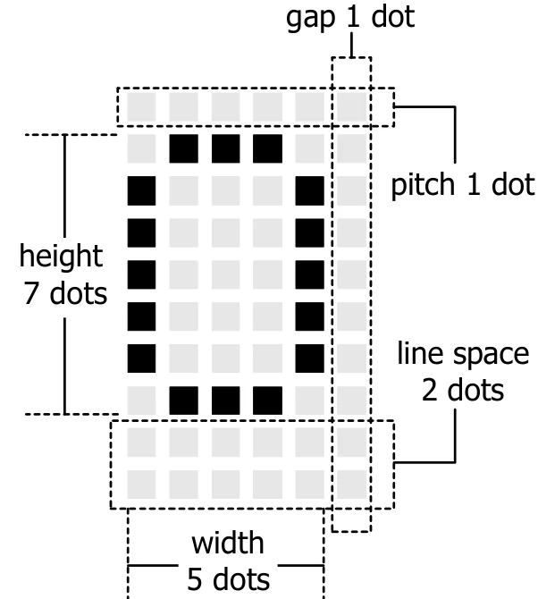
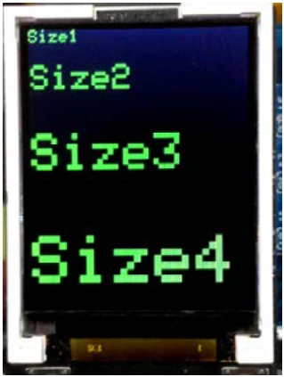

5.3.11 setTextSize
This function is used to set the text size. The text size is 1x time by default. It requires 6 x 10 dots include character gap. With the default size, this display shows 21 characters 16 lines maximum in vertical.

Syntax
setTextSize(unsigned int newSize)Parameter
newSize - times number of the default size. It is 1 to 16.
text size 1 contains 21 characters 16 lines
text size 2 contains 10 characters 8 lines
text size 3 contains 7 characters 5 lines
text size 4 contains 5 characters 4 lines
text size 5 contains 4 characters 3 lines
text size 6 and 7 contains 3 characters 2 lines
text size 8 contains 2 characters 2 lines
text size 9 and 10 contains 2 characters 1 line
text size 11 to 16 contains only 1 character and 1 line to fit in screen.
Example 5-13
#include <ATX2.h>
void setup()
{
setTextSize(1); // Set text size as default
setTextColor(GLCD_GREEN); // Set text color as green
glcd(0,0,"Size1"); // Show message
setTextSize(2);
glcd(1,0,"Size2"); // Set text size 2x
setTextSize(3);
glcd(2,0,"Size3"); // Set text size 3x
setTextSize(4);
glcd(3,0,"Size4"); // Set text size 4x
}
void loop()
{}
Original manual, pages 85–86